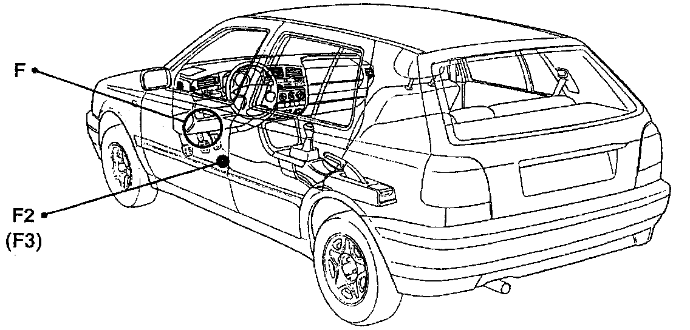

Operation CHARM
: Car repair manuals for everyone.
Home
>>
Volkswagen
>>
1997
>>
GTI (1H1) V6-2.8L (AAA)
>>
Repair and Diagnosis
>>
Sensors and Switches
>>
Sensors and Switches - Instrument Panel
>>
Door Switch
>>
Locations
>>
Driver's Side
Driver's Side
F, F2, F3:

Component Location View
F2:
Component View
F2 Door Contact Switch-driver's Side
-
On left-front door jamb, near latch
-
Shown with rubber cover removed